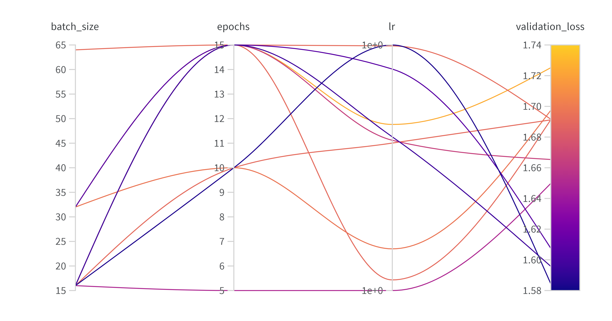

{kind=link}

Operations
This is the report template for the exam. Please only remove the text formatted as with three dashes in front and behind like:
--- question 1 fill here ---
Where you instead should add your answers. Any other changes may have unwanted consequences when your report is
auto-generated at the end of the course. For questions where you are asked to include images, start by adding the image
to the figures subfolder (please only use .png, .jpg or .jpeg) and then add the following code in your answer:

In addition to this markdown file, we also provide the report.py script that provides two utility functions:
Running:
bash
python report.py html
Will generate a .html page of your report. After the deadline for answering this template, we will auto-scrape
everything in this reports folder and then use this utility to generate a .html page that will be your serve
as your final hand-in.
Running
bash
python report.py check
Will check your answers in this template against the constraints listed for each question e.g. is your answer too short, too long, or have you included an image when asked. For both functions to work you mustn't rename anything. The script has two dependencies that can be installed with
bash
pip install typer markdown
or
bash
uv add typer markdown
The checklist is exhaustive which means that it includes everything that you could do on the project included in the curriculum in this course. Therefore, we do not expect at all that you have checked all boxes at the end of the project. The parenthesis at the end indicates what module the bullet point is related to. Please be honest in your answers, we will check the repositories and the code to verify your answers.
data.py file such that it downloads whatever data you need and preprocesses it (if necessary) (M6)model.py and a training procedure to train.py and get that running (M6)requirements.txt and requirements_dev.txt file with whatever dependencies that you
are using (M2+M6)pep8) while doing the project (M7)Enter the group number you signed up on
Answer:
50
Enter the study number for each member in the group
Answer:
s224081, s225784, s210666, s224215, s210659
A requirement to the project is that you include a third-party package not covered in the course. What framework did you choose to work with and did it help you complete the project?
Recommended answer length: 100-200 words.
Example: We used the third-party framework ... in our project. We used functionality ... and functionality ... from the package to do ... and ... in our project.
Answer:
We used the TIMM library as a third-party package in our project, as it provides a wide range of pre-trained models and architectures for image classification tasks. Espeically, we used the ResNet18 model. It is described as one of the smallest and most lightweight models, hence, making it a popular choice. By using the pre-trained weights from TIMM, we were able to speed up our general development process.
In the following section we are interested in learning more about you local development environment. This includes how you managed dependencies, the structure of your code and how you managed code quality.
Explain how you managed dependencies in your project? Explain the process a new team member would have to go through to get an exact copy of your environment.
Recommended answer length: 100-200 words
Example: We used ... for managing our dependencies. The list of dependencies was auto-generated using ... . To get a complete copy of our development environment, one would have to run the following commands
Answer:
We used UV for managing environments, and all of our dependencies are in the and a pyproject.toml file which manages our packages. In the beginning, we linked the pyproject.toml file to a requirements.txt file for easier installation of dependencies, but later, we had to restrict ourselves to only using the pyproject.toml file due to issues with .dvc when used together with requirements.txt.
Furthermore, we used Cookiecutter to create the initial project structure. To uphold the PEP8 standard we used Ruff for linting formatting.
If a new team member were to join (assuming they already cloned the repository), all they have to do is, first, ensure they have UV installed on their computer, then from the main repository they have to do cd MLOps_project to get into the project folder, and then run one of the following commands according to their hardware setup:
CPU:
bash
uv sync --extra cpu --index pytorch-cpu
CUDA (NVIDIA GPUs):
bash
uv sync --extra cuda --index pytorch-cuda
MPS (Apple Silicon GPUs):
bash
uv sync --extra mps --index pytorch-mps
We expect that you initialized your project using the cookiecutter template. Explain the overall structure of your code. What did you fill out? Did you deviate from the template in some way?
Recommended answer length: 100-200 words
Example: From the cookiecutter template we have filled out the ... , ... and ... folder. We have removed the ... folder because we did not use any ... in our project. We have added an ... folder that contains ... for running our experiments.
Answer:
From the cookiecutter template, we have filled out the data.py, models.py, train.py, and api.py files in the src/project_name/ folder, and we filled out all python test files under the tests/ folder. Though, we deleted the visualize.py file, since all visualization was done in w&b and gcloud monitoring.
We have also added configuration files in the configs/ folder to manage our hyperparameters and experiment settings along with a new api/ folder in the main directory to contain the API code for deployment as well as data drift detection.
Moreover, we later made two versions of the train.pyfile. The one keeping the original name implements w&b logging and sweeping, meanwhile the other named train_hydra_ver.py implements hydra configs and w&b logging - this was required since hyperparameter sweeping along with hydra gave conflicts.
Did you implement any rules for code quality and format? What about typing and documentation? Additionally, explain with your own words why these concepts matters in larger projects.
Recommended answer length: 100-200 words.
Example: We used ... for linting and ... for formatting. We also used ... for typing and ... for documentation. These concepts are important in larger projects because ... . For example, typing ...
Answer:
For code quality and format, we went for PEP8 standards using Ruff for linting and formatting. These formatting steps were required before mergning a pull request with the main repository, as unit tests were created to see, if code followed the required standards. If not, the unit tests on Github actions would fail.
Generally, such rules for code quality are important for larger projects, since they help ensure a baseline for the code quality, making it easier for other team members to read and understand each other's code. The code for the entire project will become more uniform, which makes it easier to maintain and extend in the future. In addition to all of this, having proper documentation becomes a benefit for new members, as they can easily understand the purpose and functionality of different parts of the codebase.
In the following section we are interested in how version control was used in your project during development to corporate and increase the quality of your code.
Each group member made their own branch to work on different parts of the project. We used pull requests to merge code into the main branch after review.
How many tests did you implement and what are they testing in your code?
Recommended answer length: 50-100 words.
Example: In total we have implemented X tests. Primarily we are testing ... and ... as these the most critical parts of our application but also ... .
Answer:
We implemented 4 Pytests testing the code (api, data, training and model structure), for instance, the training test file would use the training function defined in train.py and with a set of hydra configs specifically for testing in config/testings/, then test_training.py would call a test version of the model named emotion_test.pth and assert if the loss is decreasing. This is useful, as emotion_test.pth could further be used for testing the evaluation script (evaluate.py). So, instead of feeding a fully trained model on numerous epochs, we could use a simple model on only 2 epochs for running tests.
What is the total code coverage (in percentage) of your code? If your code had a code coverage of 100% (or close to), would you still trust it to be error free? Explain you reasoning.
Recommended answer length: 100-200 words.
Example: The total code coverage of code is X%, which includes all our source code. We are far from 100% coverage of our ** code and even if we were then...*
Answer:
We ran uv run coverage run -m pytest tests/ with tests covering the data, model and training parts of the source code. The data tests covered 16% of the code, model tests covered 83% of the code and training tests covered 100% of the code. The code coverage is far from 100% for our data tests, but coverage for the other tests are high. However, even if we were to reach 100% coverage for all tests, we would not trust the code to be completely error free. Because a 100% coverage only ensures that the code can run, but it does not guarantee that the code is logically correct for different cases (especially edge cases).
While 100% coverage tests is a good indicator for code quality and helps reduce uncertainty, it does not eliminate it.
Did your workflow include using branches and pull requests? If yes, explain how. If not, explain how branches and pull request can help improve version control.
Recommended answer length: 100-200 words.
Example: We made use of both branches and PRs in our project. In our group, each member had an branch that they worked on in addition to the main branch. To merge code we ...
Answer:
The first thing we did when joining a shared Git repository was to create a branch for each teammember resulting in 5 branches (excluding main). The general workflow was that each member worked on their own branch and when they wanted to merge code into the main branch, they created a pull request. The pull request was then reviewed by at least another member before being approved and it had to undergo unit tests via Github actions, and if approved, it would be merged into the main branch. This process helped both code quality, version control and preventing merge conflicts.
Did you use DVC for managing data in your project? If yes, then how did it improve your project to have version control of your data. If no, explain a case where it would be beneficial to have version control of your data.
Recommended answer length: 100-200 words.
Example: We did make use of DVC in the following way: ... . In the end it helped us in ... for controlling ... part of our pipeline
Answer:
Yes, we used DVC (Data Version Control) to manage our large image datasets. Instead of storing the .pth files in Git, which would make the repository too large, DVC created small .dvc metadata files. This was very useful, as we cut could done several MB's of data from our Git repository. Having such large files being shoved around in push and pull requests between out local devices would also slow down our development process, as many of our machines would have trouble downloading such large files. Before DVC we also tried an open source git extension called Git LFS, but this did not work well for macos users, and we all preferred DVC instead.
These files contain hashes (pointers) to the actual data stored in our GCP Bucket. This allowed us to version our data alongside our code, ensuring that every model version is linked to the exact dataset version used to train it.
Discuss you continuous integration setup. What kind of continuous integration are you running (unittesting, linting, etc.)? Do you test multiple operating systems, Python version etc. Do you make use of caching? Feel free to insert a link to one of your GitHub actions workflow.
Recommended answer length: 200-300 words.
Example: We have organized our continuous integration into 3 separate files: one for doing ..., one for running ... testing and one for running ... . In particular for our ..., we used ... .An example of a triggered workflow can be seen here:
Answer:
In our project, we have organized our continuous integration into 7 workflows (found under .github/workflows), each serving a specific purpose in our development pipeline. Four of our workflows run automatically on every push to the main branch: - Linting checks code quality against PEP8 standards using Ruff. - Tests runs our unit test suite with pytest. - Deploy-docs publishes our documentation, - Docker-builder automatically builds and pushes Docker images to our GCP Artifact Registry.
For our pytests (tests.yaml) we test across multiple Python versions (3.10, 3.11, 3.12) and operating systems (Ubuntu, Windows, macOS) to ensure broad compatibility and catch version-specific issues early if needed. The multi-Python testing helps us maintain code that works reliably across different environments the team might use. We did however experience rather slow run times, and to optimize the CI/CD execution time we implemented caching for both the linting and testing workflows, which significantly reduced redundant installations and re-computations, allowing faster feedback on our code changes.
Additionally, we implemented 3 event-triggered workflows that activate under specific conditions: - Pre-commit-update runs nightly (or manually) to update pre-commit hook versions and open a pull request - Stage-model triggers when model registry changes occur (ensuring version control of trained models). - CML-data activates when data changes are detected, enabling continuous monitoring of data pipeline integrity.
In the following section we are interested in learning more about the experimental setup for running your code and especially the reproducibility of your experiments.
How did you configure experiments? Did you make use of config files? Explain with coding examples of how you would run a experiment.
Recommended answer length: 50-100 words.
Example: We used a simple argparser, that worked in the following way: Python my_script.py --lr 1e-3 --batch_size 25
Answer:
We used Hydra for configuration management, focusing mainly on training experiments. YAML files for training.py were defined in a configs/ folder, where parameters such as learning rate, batch size, and epochs were specified. This allowed us to easily switch between different training setups. A default experiment was run using:
uv run train
Specific configurations, e.g. ex1_conf.yaml, were selected via:
uv run train --config-name ex1_conf
All configurations and logs were automatically saved in the outputs/ folder.
Reproducibility of experiments are important. Related to the last question, how did you secure that no information is lost when running experiments and that your experiments are reproducible?
Recommended answer length: 100-200 words.
Example: We made use of config files. Whenever an experiment is run the following happens: ... . To reproduce an experiment one would have to do ...
Answer:
As mentioned in the question above, we used Hydra for configuration management. Whenever an experiment is run, the configuration file used for that specific experiment is saved in the outputs/ folder along with the logs and results. This ensures that all the hyperparameters and settings used during the experiment are recorded and can be referenced later.
Since all of our experiment configs exits in .yaml files already pushed to the main repository, a person who wants to reproduce an experiment would simply just have to run the training script using one of the config files.
It should also be noted that the outputs folder itself is git-ignored, to not overload the repository with numerous different runs. This will not hinder any reproducibility, since, again, the configs for all experiment settings that we used already exit on the repo.
Upload 1 to 3 screenshots that show the experiments that you have done in W&B (or another experiment tracking service of your choice). This may include loss graphs, logged images, hyperparameter sweeps etc. You can take inspiration from this figure. Explain what metrics you are tracking and why they are important.
Recommended answer length: 200-300 words + 1 to 3 screenshots.
Example: As seen in the first image when have tracked ... and ... which both inform us about ... in our experiments. As seen in the second image we are also tracking ... and ...
Answer:
We have picked three screenshots below from our W&B dashboard. Firstly the loss chart below:
This image shows the loss over a training process through 10 epochs for different runs. We have a total of 4 runs that are logged right now each with its own color (of course we have had more, but we cleaned up in our w&b project). Here, all runs are with same set of configs as depicted at the top of the image. On the image, the y-axis is our training loss value, and the x-axis is batches, and each point in the graph is a batch update where each step processes 32 samples.
Next up is the image of hyperparameter sweeps:

The image shows optimal choices of parameter values for learning rate, batch size and epochs for which will give the lowest validation loss (as depicted by the color bar). This is an interesting and useful image as it could help us identify key hyperparameters that could help improve model performance. For instance, one of the runs shows that 10 epochs and a small batch sice and learning rate on 1 gives a low validation loss (yellow color).
Finally, we have an image over validation below:

These were for the same model runs for the loss chart, but this time, we see validation accuracy again over 10 epochs for all models (and the other configs are the same as well). For this image, the x-axis is batch updates again, and y-axis is validation accuracy.
Docker is an important tool for creating containerized applications. Explain how you used docker in your experiments/project? Include how you would run your docker images and include a link to one of your docker files.
Recommended answer length: 100-200 words.
Example: For our project we developed several images: one for training, inference and deployment. For example to run the training docker image:
docker run trainer:latest lr=1e-3 batch_size=64. Link to docker file:Answer:
We used Docker to esnure reproducibility of our project and how we deployed environments. So, we made docker images for different stages of our project, most notably an API image for model inference.
Our images are built and automatically pused via Github actions. In particular, the docker-builder.yml workflow builds the API image from dockerfiles/api.dockerfile and pushes it to gcloud artifact registry. Here, every push to main will give us a versioned container image. The image can be built and run locally using:
bash
docker build -f dockerfiles/api.dockerfile -t emotion-app .
bash
docker run -p 8080:8080 emotion-app
Link to a dockerfile is here.
When running into bugs while trying to run your experiments, how did you perform debugging? Additionally, did you try to profile your code or do you think it is already perfect?
Recommended answer length: 100-200 words.
Example: Debugging method was dependent on group member. Some just used ... and others used ... . We did a single profiling run of our main code at some point that showed ...
Answer:
For debugging during early development, we relied on VSCode's built-in debugger and the pdb module (uv run python -m pdb -c continue my_script.py) as covered in M12. When integrating Weights & Biases (W&B), we primarily used run logs to surface errors and identify implementation issues. After deploying to GCP Cloud and linking it to W&B, our debugging strategy changed to either leverage W&B logs for model-level insights or GCP's native logging for infrastructure-level issues. LLM models has also been used for debugging and code reviewing on the go.
We didn’t do any code profiling in this project, even though it probably would’ve helped. Profiling could’ve shown us performance bottlenecks early on, but we focused more on getting everything working and deployed than on optimizing. If we were to keep working on this profiling would definitely be something to add.
In the following section we would like to know more about your experience when developing in the cloud.
List all the GCP services that you made use of in your project and shortly explain what each service does?
Recommended answer length: 50-200 words.
Answer: We used the following four primary GCP services:
Cloud Storage: Acted as our data lake and model registry, storing our versioned datasets (.pt tensors) and trained model checkpoints (.pth files).
Artifact Registry: A central repository where we stored and managed our Docker container images for both training and inference.
Vertex AI: Used for serverless custom training jobs. It provisioned the necessary compute resources to run our training script at scale without us managing the underlying VMs.
Cloud Run: A fully managed platform where we deployed our FastAPI inference service as a container, allowing it to auto-scale based on incoming request traffic.
The backbone of GCP is the Compute engine. Explained how you made use of this service and what type of VMs you used?
Recommended answer length: 100-200 words.
Example: We used the compute engine to run our ... . We used instances with the following hardware: ... and we started the using a custom container: ...
Answer:
While we utilized Vertex AI for our serverless training runs, the platform leverages Compute Engine infrastructure as its underlying "backbone" to execute custom code. For our specific training jobs, we selected the n1-standard-4 machine type from the general-purpose family. These virtual machines provide a balanced configuration of 4 vCPUs and 15 GB of RAM, which proved sufficient for processing our ResNet18 emotion classification model without hitting memory bottlenecks.
We opted for this specific tier because it is optimized for balanced performance and cost-efficiency for small-to-moderate datasets. By using these instances, we benefited from high-performance networking and the ability to mount our GCS buckets directly to the VM via GCS FUSE, allowing for seamless data streaming during the training process. This setup ensured we only paid for the active compute time required for our v1 through v13 training iterations, keeping our total spend well within our project credits.
Insert 1-2 images of your GCP bucket, such that we can see what data you have stored in it. You can take inspiration from this figure.
Answer:

Upload 1-2 images of your GCP artifact registry, such that we can see the different docker images that you have stored. You can take inspiration from this figure.
Answer:


Upload 1-2 images of your GCP cloud build history, so we can see the history of the images that have been build in your project. You can take inspiration from this figure.
Answer:


Did you manage to train your model in the cloud using either the Engine or Vertex AI? If yes, explain how you did it. If not, describe why.
Recommended answer length: 100-200 words.
Example: We managed to train our model in the cloud using the Engine. We did this by ... . The reason we choose the Engine was because ...
Answer:
Yes, we successfully trained our model using Vertex AI Custom Jobs. We containerized our training application with Docker and pushed it to the Artifact Registry, ensuring our environment was identical to our local setup. We then used the gcloud ai custom-jobs create command to launch the job in the europe-west1 region.
Vertex AI automatically provisioned an n1-standard-4 VM (4 vCPUs, 15 GB RAM), which provided the necessary compute power for our ResNet18 model. A critical component was mounting our GCS bucket via GCS FUSE, which allowed the script to stream the training tensors (.pt files) directly as if they were on a local drive, bypassing the need for manual downloads. This serverless approach was highly efficient as the resources were only active during the training duration, minimizing costs. After the final epoch, the model checkpoint was automatically saved back to our persistent GCS bucket for future deployment.
Did you manage to write an API for your model? If yes, explain how you did it and if you did anything special. If not, explain how you would do it.
Recommended answer length: 100-200 words.
Example: We did manage to write an API for our model. We used FastAPI to do this. We did this by ... . We also added ... to the API to make it more ...
Answer:
Yes, we wrote a simple API "app" for our model using FastAPI, which has located in api/main.py. The app exposes an endpoint /predict that accepts POST requests with input data for making predictions. We used the uvicorn server to run the FastAPI application locally for testing purposes first. What the app does is that it loads a pre-trained version of our emotion model, then a user can upload an image with a facial expression, and the app will return the predicted emotion along with a score on how confident the model is. Of course, the emotions that the model can predict are limited to the labels that is it trained on.
Did you manage to deploy your API, either in locally or cloud? If not, describe why. If yes, describe how and preferably how you invoke your deployed service?
Recommended answer length: 100-200 words.
Example: For deployment we wrapped our model into application using ... . We first tried locally serving the model, which worked. Afterwards we deployed it in the cloud, using ... . To invoke the service an user would call
curl -X POST -F "file=@file.json"<weburl>Answer:
We successfully deployed our FastAPI application to Cloud Run for a serverless production environment. To ensure the service was reachable for testing, we enabled unauthenticated invocations by granting the Cloud Run Invoker role to allUsers. The API is publicly accessible at: https://simple-emotion-gcp-app-826382891728.europe-west1.run.app. To manage costs, we configured the service with strict scaling limits, including a maximum of 1 concurrent request per instance.
HEADS UP: the link that you see is a setup built on an older docker image that calls the src/group50/api.py as the main entry point for the application, hence the link should just show some "status": "ok" message when accessed via a web browser. So again, to emphasize that our main FastAPI app is located in api/main.py which this link from an outdated docker image does not point to.
Did you perform any unit testing and load testing of your API? If yes, explain how you did it and what results for the load testing did you get. If not, explain how you would do it.
Recommended answer length: 100-200 words.
Example: For unit testing we used ... and for load testing we used ... . The results of the load testing showed that ... before the service crashed.
Answer:
For unit testing we used pytest and implemented tests covering the most critical parts of our API and ML pipeline: data loading, model behavior, and training.
For the data layer, we tested that the processed tensors load correctly, that train and test sets are non-empty, that each sample has shape (3, 48, 48), and that all labels lie in the expected range 0–6. These tests are skipped automatically if the data files are not present.
For the model, we verified that the forward pass returns outputs of shape (batch, 7), that the model contains trainable parameters, and that it raises meaningful errors when given invalid input shapes. We also used parametrized tests to validate behavior for different batch sizes.
For training, we ran a short two-epoch training loop and checked that the loss values are finite and that a model checkpoint is saved.
For load testing, we would use Locust to simulate concurrent users sending requests to the API endpoints. By gradually increasing the number of users, we could measure response times, throughput, and error rates to identify the service’s performance limits and potential bottlenecks.
Did you manage to implement monitoring of your deployed model? If yes, explain how it works. If not, explain how monitoring would help the longevity of your application.
Recommended answer length: 100-200 words.
Example: We did not manage to implement monitoring. We would like to have monitoring implemented such that over time we could measure ... and ... that would inform us about this ... behaviour of our application.
Answer:
Yes, we (almost) successfully implemented monitoring for our deployed model by instrumenting our FastAPI application with the Prometheus FastAPI Instrumentator. This setup automatically exposes a /metrics endpoint that tracks essential "Golden Signals," including request counts, latencies, and HTTP status codes (e.g., 2xx, 4xx, 5xx).
To visualize this telemetry in the cloud, we enabled the Google Cloud Managed Service for Prometheus sidecar for our Cloud Run service, allowing custom metrics to flow directly into a Google Cloud Monitoring dashboard. We also succesfully linked our GCP training to W&B (Wandb), allowing us to m onitor model performance metrics like inference latency, prediction confidence, and error rates over time. This allowed us to track if the model's behavior degraded in production or if data drift occurred.
In the following section we would like you to think about the general structure of your project.
How many credits did you end up using during the project and what service was most expensive? In general what do you think about working in the cloud?
Recommended answer length: 100-200 words.
Example: Group member 1 used ..., Group member 2 used ..., in total ... credits was spend during development. The service costing the most was ... due to ... . Working in the cloud was ...
Answer:
Group member Henrik: During the project, I was the primary user of the group's cloud resources. We started with a $50.00 credit allocation, and by the end of the project, $48.85 remained, meaning we spent a total of $1.15.
The most expensive service was Vertex AI (Compute Engine). This was due to the multiple training iterations (v1 through v13) we performed on n1-standard-4 virtual machines to resolve pathing and checkpointing issues. While Cloud Storage hosted our large processed tensors and model registry, its cost was negligible compared to the active compute time required for model training.
In general, working in the cloud was a highly positive but steep learning curve. The ability to provision high-performance hardware on demand and share data instantly with group members via GCS buckets was invaluable for our collaboration. However, the complexity of IAM permissions and the initial difficulty of debugging "hidden" containerized environments reminded us that cloud development requires much more meticulous environment configuration than local development.

Did you implement anything extra in your project that is not covered by other questions? Maybe you implemented a frontend for your API, use extra version control features, a drift detection service, a kubernetes cluster etc. If yes, explain what you did and why.
Recommended answer length: 0-200 words.
Example: We implemented a frontend for our API. We did this because we wanted to show the user ... . The frontend was implemented using ...
Answer:
We have not implemented anything extra in our project.
Include a figure that describes the overall architecture of your system and what services that you make use of. You can take inspiration from this figure. Additionally, in your own words, explain the overall steps in figure.
Recommended answer length: 200-400 words
Example:
The starting point of the diagram is our local setup, where we integrated ... and ... and ... into our code. Whenever we commit code and push to GitHub, it auto triggers ... and ... . From there the diagram shows ...
Answer:

The starting point of the diagram is the setup on our local machine, which all happens inside our own Git repository. Here, we have integrated .dvc for pulling data from GCP Cloud Storage, which allows us to avoid storing large datasets locally on each team member’s machine. Instead, the data is versioned and fetched when needed. We use uv for package and environment management, ensuring reproducibility across machines, together with a cookiecutter project structure that enforces a consistent and scalable layout.
Within this local setup, we implemented all necessary code for data loading, model definition, training, evaluation, and testing. This includes preprocessing pipelines, PyTorch-based model development, and experiment tracking with W&B. All development is performed in isolated virtual environments to avoid dependency conflicts and ensure consistent behavior. When changes are ready, they are committed to a local branch and submitted as a pull request to the main GitHub repository. At this stage, GitHub Actions automatically triggers unit tests, formatting checks (via Ruff), and general code validation. This step ensures that only stable and well-tested code is merged into the main branch, maintaining overall system reliability.
Once code is merged into the main branch, it triggers a Cloud Build job in GCP that builds our Docker container. This container encapsulates the full runtime environment, including dependencies and model code, making deployments reproducible and portable. The latest container is then used to deploy and run models in the cloud.
After deployment, monitoring is triggered in GCP and the metrics are sent to Weights & Biases for visualization and logging. This enables us to track training behavior, performance metrics, and compare experiments across runs in a centralized dashboard. W&B therefore plays a key role in experiment management and post-deployment analysis.
Overall, this architecture connects local development, versioned data, automated testing, cloud deployment, and experiment tracking into one coherent MLOps pipeline, ensuring reproducibility, scalability, and transparency throughout the entire machine learning lifecycle.
Discuss the overall struggles of the project. Where did you spend most time and what did you do to overcome these challenges?
Recommended answer length: 200-400 words.
Example: The biggest challenges in the project was using ... tool to do ... . The reason for this was ...
Answer:
The most significant challenge of this project was the transition from local development to a fully integrated GCP environment. While our initial Python scripts and model logic worked perfectly on local machines, "cloudifying" the workflow introduced a layer of complexity regarding infrastructure orchestration, IAM permissions, and persistent storage paths that we had not fully anticipated.
We spent a good amount of our time troubleshooting environment parity and pathing issues within Vertex AI. A major bottleneck occurred when our training script, which ran successfully in a local Docker container, failed in the cloud because it could not correctly reference the GCS FUSE mount points. We encountered multiple RuntimeError and OSError instances where the script attempted to write checkpoints to local container directories that did not persist, rather than the intended Cloud Storage buckets.
To overcome these obstacles, we adopted a more disciplined MLOps approach:
Infrastructure as Code & Robust Pathing: We refactored our train.py and main.py to dynamically detect the environment. By using os.makedirs(..., exist_ok=True) and conditional pathing logic, we ensured the code could switch between local /models and cloud /gcs/ directories without manual intervention.
Permission & Security Layer: We spent significant time resolving IAM permission errors. We initially struggled with "Input/output" errors that were ultimately traced back to the service account having only "Viewer" roles. Upgrading to Storage Object Admin was a critical "aha!" moment that allowed our Vertex AI jobs to finally save artifacts.
Containerization for Portability: Using Docker was essential to overcoming "it works on my machine" syndrome. By building unified images for both training and inference, we ensured that the dependencies used in Vertex AI exactly matched our local testing environment.
State the individual contributions of each team member. This is required information from DTU, because we need to make sure all members contributed actively to the project. Additionally, state if/how you have used generative AI tools in your project.
Recommended answer length: 50-300 words.
Example: Student sXXXXXX was in charge of developing of setting up the initial cookie cutter project and developing of the docker containers for training our applications. Student sXXXXXX was in charge of training our models in the cloud and deploying them afterwards. All members contributed to code by... We have used ChatGPT to help debug our code. Additionally, we used GitHub Copilot to help write some of our code. Answer:
All five members contributed actively through coding, reviews, debugging sessions, and report/documentation work. Student s20666 emphasized testing/QA and CI reliability (unit tests, coverage, linting, pre-commit, API tests, load tests) and supported performance improvements.
Student s224215 emphasized project structure and configuration (cookiecutter, data pipeline, dependency management, Hydra configs) and supported API/deployment and architecture documentation.
Student s210659 emphasized cloud execution and operations (GCP storage, cloud training, Cloud Run deployment, metrics/monitoring/alerts).
Student s225787 emphasized reproducibility and model robustness (Docker, CI image builds, W&B tracking/sweeps, drift detection and deployment).
Student s224081 emphasized model/training implementation and developer tooling (model/training code, CLI, CI improvements, tests, pre-commit support).
Generative AI tools: We used ChatGPT for troubleshooting and improving test/CI setup and code structure; GitHub Copilot for boilerplate and small code fragments.
{kind=link}
{kind=link}
{kind=link}
{kind=link}
{kind=link}